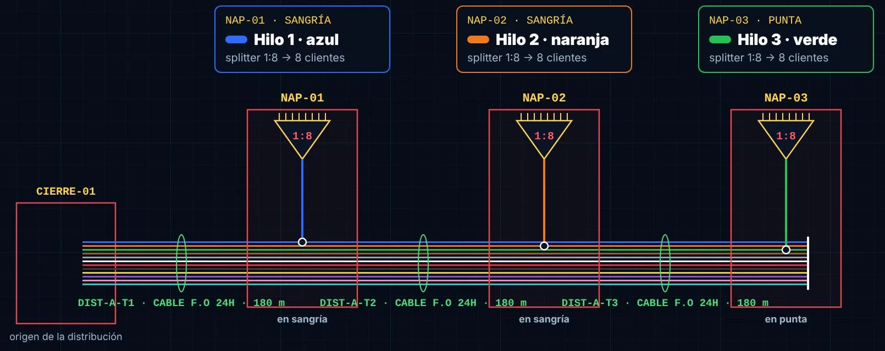
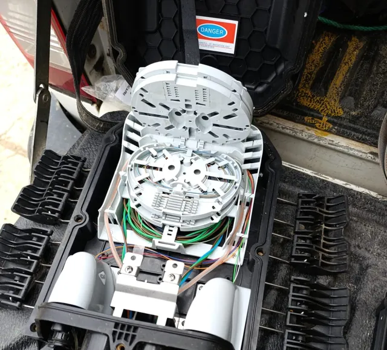
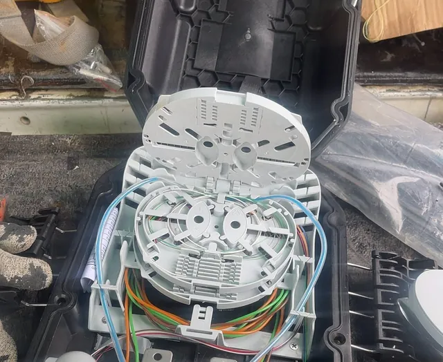
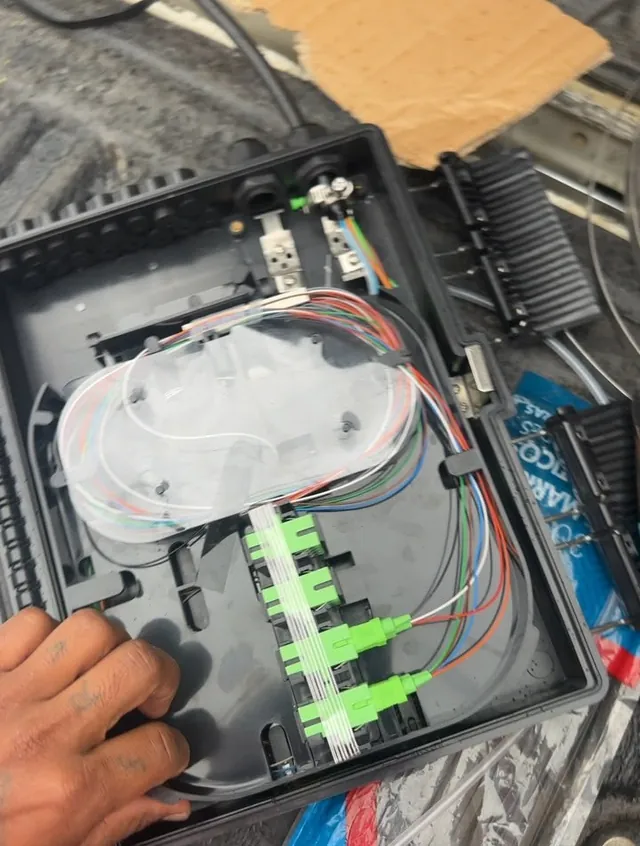
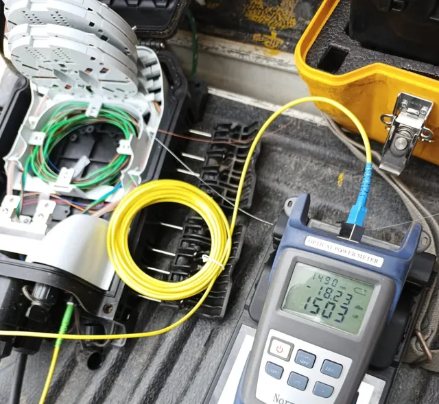

Parte 1
Interpretación del unifilar y configuración de cajas NAP
Cubre los pasos 1 a 5 del procedimiento. Ver en YouTube (se abre en otra pestaña)
Configuración de una caja NAP en una red FTTH: lectura del plano unifilar, identificación del hilo asignado, conexión del splitter, trazabilidad de las salidas y verificación de la potencia que llega a los usuarios.
Material de apoyo formativo. Los números de puerto, fibras, colores y códigos de caja de este módulo son ejemplos. En obra, cada asignación se toma del unifilar y de la matriz de empalmes del proyecto, y los valores de aceptación, de las fichas de los equipos y del diseño. No sustituye el criterio del ingeniero responsable.
Al terminar este módulo, el técnico estará en capacidad de:
Conocimientos previos: dB, dBm, código de colores TIA-598 y medición de pérdida, del módulo Fundamentos de fibra óptica, y el procedimiento de fusión de fibra óptica.
La configuración de una caja NAP no la fija una ley colombiana: la definen el diseño del proyecto, las fichas de los componentes y recomendaciones y normas técnicas internacionales.
La G.984.2 define las clases de presupuesto óptico de una red GPON; como referencia, la clase B+ admite hasta 28 dB de pérdida entre OLT y ONT y la C+ hasta 32 dB, según los módulos ópticos instalados. La TIA-455-8 indica que la pérdida de un empalme medida con OTDR se toma en ambos sentidos y se promedia.
Serie Redes FTTH · Cajas NAP, producida por NPE, en dos partes con narración y subtítulos. La primera enseña a leer el unifilar; la segunda recorre la caja por dentro: splitter, salidas, pérdidas y verificación. Cada capítulo lleva al tema correspondiente del video.
Cubre los pasos 1 a 5 del procedimiento. Ver en YouTube (se abre en otra pestaña)
Cubre los pasos 6 a 12 del procedimiento. Ver en YouTube (se abre en otra pestaña)
Secuencia de referencia para configurar una caja NAP, en el orden de los dos videos.
Antes de cada fusión, el técnico debe poder responder cuatro preguntas: ¿qué hilo estoy usando?, ¿de dónde viene?, ¿hacia dónde va? y ¿qué elemento alimenta? Si falta una respuesta, todavía no se fusiona.
Datos y criterios que el video no desarrolla: lectura del plano, criterios de la caja, pérdida del splitter, presupuesto, trazabilidad y evaluación del empalme. El tema completo está en la guía técnica (PDF).
En el unifilar cada caja muestra su configuración (sangría o punta), el hilo que alimenta su splitter y la relación del splitter. Los demás hilos del cable siguen como reserva o hacia otras cajas.

NAP-01 y NAP-02 están en sangría y toman los hilos 1 (azul) y 2 (naranja); NAP-03 está en punta, al final del ramal, y toma el hilo 3 (verde). Los hilos 4 a 24 siguen como reserva. Cada splitter tiene un hilo definido y cada salida, un cliente definido.
En campo: antes de cada fusión el técnico debe poder responder cuatro preguntas: qué hilo está usando, de dónde viene, hacia dónde va y qué elemento alimenta. Si falta una respuesta, todavía no se fusiona. Si el unifilar y la matriz de empalmes no coinciden, se consulta con el responsable del diseño.
| Componente | Función | Criterio de calidad |
|---|---|---|
| Entrada del cable | Fija el cable y sella el paso. | Cable sujeto por su elemento de tracción; sello completo; sin cubierta cortada dentro del paso. |
| Reserva de fibra | Deja longitud para reparar sin tensionar. | Enrollada en el organizador, sin cruces ni cambios bruscos de dirección. |
| Bandeja de empalmes | Aloja y protege las fusiones. | Cada fusión con su protector, en su ranura, con radios amplios a la entrada y la salida. |
| Splitter | Divide la señal de una entrada entre varias salidas. | Fijado en su alojamiento; relación igual a la del diseño. |
| Entrada del splitter | Recibe la fibra de alimentación. | Identificada sin ambigüedad; nunca intercambiada con una salida. |
| Salidas del splitter | Llevan cada fracción de la señal a un puerto. | Ordenadas por número; cada una con su destino registrado. |
| Puertos hacia los usuarios | Adaptadores donde se conectan las acometidas. | Rotulados; tapas guardapolvo en los puertos libres. |
En campo: el radio mínimo de curvatura lo fija el fabricante. Una curva más cerrada aumenta la pérdida, sobre todo en las longitudes de onda largas, y puede no notarse hasta que la tapa presiona las fibras al cerrar: la potencia se verifica después de cerrar la caja.
Un splitter PLC divide la potencia de una entrada entre N salidas. Su pérdida tiene dos partes: la división ideal, inevitable, que vale 10 × log10(N), y el exceso propio del componente. Cada vez que se duplican las salidas, la división ideal sube 3 dB.
| Splitter | División ideal | Ficha (máximo) | Exceso aproximado |
|---|---|---|---|
| 1:2 | 3,0 dB | — | — |
| 1:4 | 6,0 dB | — | — |
| 1:8 | 9,0 dB | 10,5 dB | 1,5 dB |
| 1:16 | 12,0 dB | 13,8 dB | 1,8 dB |
| 1:32 | 15,1 dB | — | — |
Valores máximos de fichas de C-COR y Corning. La ficha también declara la uniformidad (diferencia máxima entre salidas, por ejemplo ≤ 0,8 dB en 1:8 y ≤ 1,0 dB en 1:16) y el rango de longitudes de onda (por ejemplo de 1260 a 1650 nm, que cubre 1310, 1490 y 1550 nm).
En campo: una salida de un splitter 1:8 con 10,6 dB menos que la entrada no indica una fusión defectuosa; un empalme de entrada de 0,6 dB sí. La relación del splitter instalado se confirma en su etiqueta contra el diseño.
El presupuesto óptico suma la pérdida de cada elemento entre el punto de medición y el usuario.
| Elemento | Pérdida | Potencia después |
|---|---|---|
| Fibra de alimentación (medida en campo) | — | −6,0 dBm |
| Empalme de entrada | 0,1 dB | −6,1 dBm |
| Splitter PLC 1:8 | 10,5 dB | −16,6 dBm |
| Empalme de salida | 0,1 dB | −16,7 dBm |
| Conexión en el adaptador de la caja | 0,3 dB | −17,0 dBm |
| Acometida de 200 m a 0,3 dB/km | 0,06 dB | −17,06 dBm |
| Conexión en la roseta del usuario | 0,3 dB | −17,4 dBm |
El splitter aporta 10,5 de los 11,4 dB que se pierden dentro y después de la caja, más del 90 %. Por eso instalar un 1:16 donde el diseño pide un 1:8 cambia el resultado en unos 3 dB, mucho más que cualquier empalme. Con dos niveles de 1:8 (cierre y NAP) se atienden 64 usuarios por puerto de OLT: la división ideal suma unos 18,1 dB y, con fichas de 10,5 dB, 21 dB; en una red GPON de clase B+ (hasta 28 dB) quedan unos 7 dB para fibra, empalmes, conectores y margen.
Potencia de entrada y pérdidas supuestas para practicar; en obra se usan la medición de campo y las fichas del proyecto.
En campo: la potencia mínima en el usuario, la pérdida máxima por empalme y los márgenes los fija cada proyecto según sus equipos y su diseño. Ninguno de los valores de referencia es, por sí solo, un criterio de aceptación.
La trazabilidad permite saber, para cada fibra de la caja, de dónde viene, a qué se conecta y a dónde va. Se construye antes de fusionar, con el unifilar y la matriz de empalmes, y se confirma después. Los cinco datos de la fibra de alimentación son: cable de distribución, tubo o grupo, número y color del hilo, destino (splitter de esta caja o continuidad) y puerto de entrada del splitter.
| Puerto | Fibra de salida | Color | Destino |
|---|---|---|---|
| S1 | 1 | Azul | Usuario · puerto 1 |
| S2 | 2 | Naranja | Usuario · puerto 2 |
| S3 | 3 | Verde | Usuario · puerto 3 |
| S4 | 4 | Café | Usuario · puerto 4 |
| S5 | 5 | Gris | Usuario · puerto 5 |
| S6 | 6 | Blanco | Usuario · puerto 6 |
| S7 | 7 | Rojo | Usuario · puerto 7 |
| S8 | 8 | Negro | Usuario · puerto 8 |
Tabla de ejemplo. Cuando las salidas alimentan otras cajas, la columna Destino lleva el código de la caja que indica el unifilar.
En campo: la entrada del splitter se rotula al desempacarlo, cada salida se conecta por número y se verifica contra la tabla, y el formato de configuración se diligencia en sitio. Dos salidas intercambiadas pueden dar servicio sin ninguna alarma, pero una desconexión programada puede afectar a otro usuario.
| Método | Qué entrega | Uso correcto |
|---|---|---|
| Estimación de la fusionadora | Un valor calculado a partir de la imagen de las fibras alineadas. | Control inmediato: una estimación alta, burbujas o desalineación indican rehacer la fusión. No reemplaza la medición. |
| OTDR en un solo sentido | Un escalón en la traza; puede exagerar la pérdida o mostrar una ganancia aparente. | Ubicar eventos. Si las fibras tienen distinto diámetro de campo modal, ese valor no es la pérdida real. |
| OTDR en ambos sentidos, promediado | El promedio de las dos mediciones. | Valor para registro y aceptación (TIA-455-8). |
Sentido A→B: 0,28 dB. Sentido B→A: −0,08 dB (ganancia aparente). (0,28 + (−0,08)) ÷ 2 = 0,10 dB. Ninguna lectura individual es la pérdida del empalme; el promedio sí.
Lecturas supuestas para practicar.
Las salidas de un mismo splitter deben leer valores parecidos, con diferencias del orden de la uniformidad de la ficha. Una salida claramente más baja apunta a su empalme, su conector o una curva en su recorrido; todas las salidas igual de bajas apuntan al empalme de entrada o a la alimentación.
En campo: un empalme no puede agregar potencia: una «ganancia» en el OTDR indica fibras con distinto diámetro de campo modal. Se mide desde el otro extremo y se promedia. Cada fusión se protege y se ubica en su ranura: un empalme sin protector puede pasar la medición y fallar después.
Riesgos para la persona y errores de configuración que afectan la red.
| Riesgo o error | Severidad | Consecuencia y control |
|---|---|---|
| Luz infrarroja invisible | Alta | Nunca mirar el extremo de una fibra ni un conector; verificar la potencia con el medidor. Gafas de seguridad. |
| Residuos de fibra | Alta | Recipiente marcado para los residuos; no dejar fragmentos en la caja ni en el área de trabajo. |
| Fusionar un hilo distinto al asignado | Alta | Servicio cortado en otra caja o fibra reservada ocupada. Se previene con los cinco datos y la continuidad verificada antes de cortar. |
| Confundir la entrada del splitter con una salida | Alta | Señal no distribuida y usuarios sin servicio. Rotular la entrada al desempacar el splitter. |
| Intercambiar salidas | Media | El registro deja de corresponder a la red. Conectar por número y verificar contra la tabla. |
| Fibras desorganizadas o curvas cerradas | Media | Pérdidas por curvatura y fibras rotas al cerrar. Canales y retenedores; revisar antes de cerrar la tapa. |
| Empalmes sin protector | Media | Fallas posteriores por esfuerzo o humedad. Protector y ranura para cada fusión. |
| No registrar colores, destinos ni potencias | Media | Mantenimiento lento e intervenciones a ciegas. Formato de configuración diligenciado en sitio. |
Lo que muestran las mediciones de una caja, su causa probable y qué hacer. Se mide en la fibra de alimentación antes de fusionar, en las salidas o puertos de la caja y en la roseta del usuario, en la longitud de onda de bajada del servicio.
| Señal | Gravedad | Qué hacer |
|---|---|---|
| Usuarios de toda la caja sin servicio o con señal muy bajaFibra de alimentación conectada a una salida del splitter y no a su entrada. | Crítica | Revisar la conexión contra el formato y fusionar la alimentación con la entrada del splitter. |
| Todas las salidas unos 3 dB por debajo de las cajas vecinasSplitter de otra relación (1:16 donde el diseño pide 1:8). | Alta | Revisar la etiqueta del componente y reemplazarlo por el del diseño. |
| Todas las salidas igual de bajasEmpalme de entrada o fibra de alimentación. | Alta | Medir la alimentación antes del splitter y revisar el empalme de entrada. |
| Una salida claramente más baja que las demásSu empalme, una curva en la bandeja o su conector. | Alta | Limpiar e inspeccionar el conector y revisar el recorrido antes de rehacer el empalme. |
| La potencia baja después de cerrar la tapaFibras presionadas por la tapa o curva cerrada. | Media | Reabrir, reacomodar las fibras en sus canales y volver a medir. |
| El OTDR muestra una ganancia en un empalmeFibras con distinto diámetro de campo modal. | Media | Medir desde el otro extremo y promediar las dos lecturas. |
| Unos 10,8 dB entre la alimentación y una salida de un 1:8Pérdida normal del splitter (~10,5 dB) más los empalmes. | Baja | No es una falla: la fusión no se rehace si el resultado coincide con el presupuesto. |
Fotos de cajas y empalmes de NPE en el Putumayo. Haga clic en una foto para verla en tamaño completo.





Una pregunta por cada clave técnica; cinco son casos de campo. Respóndala y luego ábrala para comprobar.
No. Puede estar reservado para otra caja, otro splitter o el crecimiento de la red. Se usa el hilo que coincide en el unifilar y en la matriz de empalmes; si los documentos no coinciden, se consulta antes de fusionar.
La tapa está presionando fibras o hay una curva cerrada en su recorrido. Se reabre, se reacomodan las fibras en sus canales y se vuelve a medir.
No. La diferencia es de 10,8 dB: el splitter aporta cerca de 10,5 dB y los empalmes de entrada y salida, unos 0,3 dB. El resultado es coherente con el presupuesto.
La etiqueta del splitter: unos 3 dB parejos coinciden con duplicar la relación. Si es un 1:16 donde el diseño pide 1:8, se reemplaza por el del diseño.
No. El registro ya no corresponde a la red: una falla futura se buscaría en la salida equivocada y una desconexión programada podría afectar al otro usuario. Se conecta cada salida según la tabla.
Nada todavía: un empalme no agrega potencia. La lectura indica fibras con distinto diámetro de campo modal. Se mide desde el otro extremo y se registra el promedio de los dos sentidos.